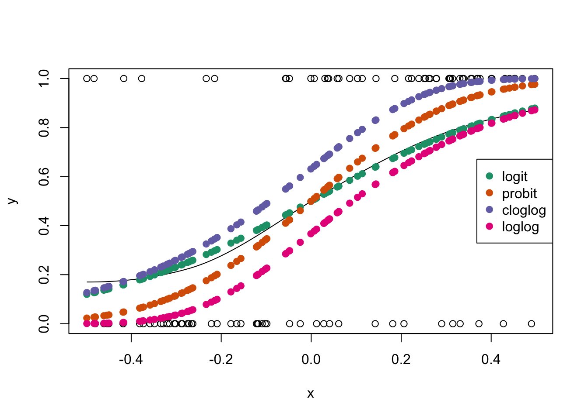
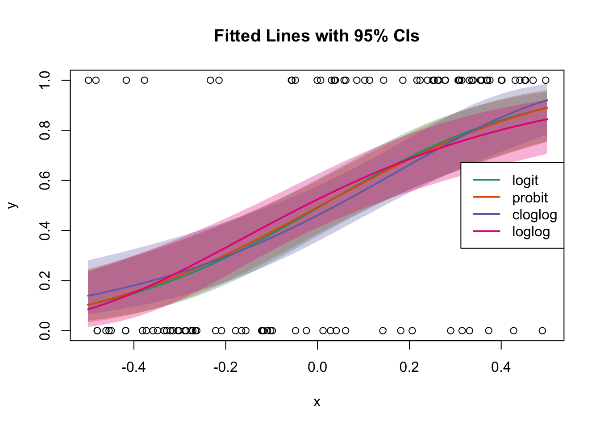

ginv <-function(etavec, link="logit"){#etavec is a vector of the values of eta (=X%*%beta)#link will be a string indicating the link functionif(link=="logit"){ ginvvals <-exp(etavec)/(1+exp(etavec)) }if(link=="probit"){ ginvvals <-pnorm(etavec) }if(link=="cloglog"){ ginvvals <-1-exp(-exp(etavec)) }if(link=="loglog"){#code this as correct inverse loglog link ginvvals <-exp(-exp(-etavec)) }return(ginvvals)}#define colors for linkslogit.col <-rgb(27,158,119, maxColorValue =255)probit.col <-rgb(217,95,2, maxColorValue =255)cloglog.col <-rgb(117,112,179, maxColorValue =255)loglog.col <-rgb(231,41,138, maxColorValue =255)
Fix \(\beta\) to be a positive value (we’ll estimate it later); play around with a few different values to see how changing \(\beta\) changes the fitted line. Do this for each of the four link functions.
Code
beta <-4#bigger values => steeper curves; smaller values => flatter curves #For probit link, a beta=5 seems to fit well; for logit link, a beta=8 does okay; cloglog and loglog don't seem appropriate based on this exercise (maybe since we aren't adjusting the intercept)eta <- dat$x*betaplot(dat$x, dat$y, xlab="x", ylab="y")lo <-loess(y~x, data=dat, span=1.5) #you may need to play with the span value to get something that looks "right" (don't spend much time on this though)newdat <-data.frame(x=seq(-.5, .5, length=500))lines(newdat$x, predict(lo, newdat))points(dat$x, ginv(eta, link="logit"), pch=19, col=logit.col)points(dat$x, ginv(eta, link="probit"), pch=19, col=probit.col)points(dat$x, ginv(eta, link="cloglog"), pch=19, col=cloglog.col)points(dat$x, ginv(eta, link="loglog"), pch=19, col=loglog.col)legend("right", legend=c("logit", "probit", "cloglog", "loglog"), pch=19, col=c(logit.col, probit.col, cloglog.col, loglog.col))

Which link do you think was used to generate your data? Why?
Fit the Four Models
Fit the four models with the different link functions. Compare the summary from each model. How do they compare? Is there anything you notice about the different model fits?
Call:
glm(formula = y ~ x, family = binomial, data = dat)
Coefficients:
Estimate Std. Error z value Pr(>|z|)
(Intercept) -0.03909 0.23617 -0.166 0.869
x 4.24557 0.89097 4.765 1.89e-06 ***
---
Signif. codes: 0 '***' 0.001 '**' 0.01 '*' 0.05 '.' 0.1 ' ' 1
(Dispersion parameter for binomial family taken to be 1)
Null deviance: 138.59 on 99 degrees of freedom
Residual deviance: 108.37 on 98 degrees of freedom
AIC: 112.37
Number of Fisher Scoring iterations: 3
Code
summary(mod.probit)
Call:
glm(formula = y ~ x, family = binomial(link = "probit"), data = dat)
Coefficients:
Estimate Std. Error z value Pr(>|z|)
(Intercept) -0.01824 0.13835 -0.132 0.895
x 2.48968 0.49577 5.022 5.12e-07 ***
---
Signif. codes: 0 '***' 0.001 '**' 0.01 '*' 0.05 '.' 0.1 ' ' 1
(Dispersion parameter for binomial family taken to be 1)
Null deviance: 138.59 on 99 degrees of freedom
Residual deviance: 108.84 on 98 degrees of freedom
AIC: 112.84
Number of Fisher Scoring iterations: 4
Code
summary(mod.cloglog)
Call:
glm(formula = y ~ x, family = binomial(link = "cloglog"), data = dat)
Coefficients:
Estimate Std. Error z value Pr(>|z|)
(Intercept) -0.4833 0.1710 -2.826 0.00471 **
x 2.8246 0.5827 4.848 1.25e-06 ***
---
Signif. codes: 0 '***' 0.001 '**' 0.01 '*' 0.05 '.' 0.1 ' ' 1
(Dispersion parameter for binomial family taken to be 1)
Null deviance: 138.59 on 99 degrees of freedom
Residual deviance: 108.97 on 98 degrees of freedom
AIC: 112.97
Number of Fisher Scoring iterations: 6
Code
summary(mod.loglog)
Call:
glm(formula = (1 - y) ~ x, family = binomial(link = "cloglog"),
data = dat)
Coefficients:
Estimate Std. Error z value Pr(>|z|)
(Intercept) -0.4370 0.1630 -2.681 0.00735 **
x -2.6794 0.5602 -4.783 1.73e-06 ***
---
Signif. codes: 0 '***' 0.001 '**' 0.01 '*' 0.05 '.' 0.1 ' ' 1
(Dispersion parameter for binomial family taken to be 1)
Null deviance: 138.59 on 99 degrees of freedom
Residual deviance: 110.03 on 98 degrees of freedom
AIC: 114.03
Number of Fisher Scoring iterations: 7
Plot the Fitted Lines with the Data
Remember, the “predict” and “fitted” functions return different defaults.
How do the fitted lines compare? Where (and by how much) do they differ? Is the portion where they differ important for your data? The log-log and c-log-log are the most different. They differ a lot in the middle (around \(pi = 0.5\)) and then again in the tails. In the middle, when \(x=0\), the log-log link would estimate a \(\hat{\pi}\) value that is around 0.2 higher than the c-log-log. That seems like a big amount.
The probit and logit fits are very similar. And fitted values are in the middle of the other two links.
Plot Confidence Intervals for Each Link
Code
#eta-hat and CI for the logit modeleta.logit <-predict(mod.logit, newdat, se=T)eta.logit.bnds <-matrix(rep(eta.logit$fit, 2), byrow=T, nrow=2) +matrix(rep(c(qnorm(.025), qnorm(.975)), each=500), byrow=T, nrow=2)*matrix(rep(eta.logit$se.fit, 2), byrow=T, nrow=2)#eta-hat and CI for probit modeleta.probit <-predict(mod.probit, newdat, se=T)eta.probit.bnds <-matrix(rep(eta.probit$fit, 2), byrow=T, nrow=2) +matrix(rep(c(qnorm(.025), qnorm(.975)), each=500), byrow=T, nrow=2)*matrix(rep(eta.probit$se.fit, 2), byrow=T, nrow=2)#eta-hat and CI for cloglog modeleta.cloglog <-predict(mod.cloglog, newdat, se=T)eta.cloglog.bnds <-matrix(rep(eta.cloglog$fit, 2), byrow=T, nrow=2) +matrix(rep(c(qnorm(.025), qnorm(.975)), each=500), byrow=T, nrow=2)*matrix(rep(eta.cloglog$se.fit, 2), byrow=T, nrow=2)#eta-hat and CI for loglog modeleta.loglog <-predict(mod.loglog, newdat, se=T)eta.loglog.bnds <-matrix(rep(eta.loglog$fit, 2), byrow=T, nrow=2) +matrix(rep(c(qnorm(.025), qnorm(.975)), each=500), byrow=T, nrow=2)*matrix(rep(eta.loglog$se.fit, 2), byrow=T, nrow=2)#Plot all fitted lines and CIs on the same plotplot(dat$x, dat$y, xlab="x", ylab="y", main="Fitted Lines with 95% CIs", type="n")#CI bands as shaded polygons (drawn first so the lines and points go on top)polygon(x=c(newdat$x, rev(newdat$x)), y=c(ginv(eta.logit.bnds[1,], link="logit"), rev(ginv(eta.logit.bnds[2,], link="logit"))), col=adjustcolor(logit.col, alpha.f=0.3), border=NA)polygon(x=c(newdat$x, rev(newdat$x)), y=c(ginv(eta.probit.bnds[1,], link="probit"), rev(ginv(eta.probit.bnds[2,], link="probit"))), col=adjustcolor(probit.col, alpha.f=0.3), border=NA)polygon(x=c(newdat$x, rev(newdat$x)), y=c(ginv(eta.cloglog.bnds[1,], link="cloglog"), rev(ginv(eta.cloglog.bnds[2,], link="cloglog"))), col=adjustcolor(cloglog.col, alpha.f=0.3), border=NA)#1-ginv for the cloglog link: yes, this is supposed to be the 1-ginv for the cloglog linkpolygon(x=c(newdat$x, rev(newdat$x)), y=c(1-ginv(eta.loglog.bnds[1,], link="cloglog"), 1-rev(ginv(eta.loglog.bnds[2,], link="cloglog"))), col=adjustcolor(loglog.col, alpha.f=0.3), border=NA)lines(newdat$x, predict(mod.logit, newdat, type='response'), col=logit.col, lwd=2)lines(newdat$x, predict(mod.probit, newdat, type='response'), col=probit.col, lwd=2)lines(newdat$x, predict(mod.cloglog, newdat, type='response'), col=cloglog.col, lwd=2)lines(newdat$x, 1-predict(mod.loglog, newdat, type='response'), col=loglog.col, lwd=2)points(dat$x, dat$y)legend("right", legend=c("logit", "probit", "cloglog", "loglog"), lwd=2, col=c(logit.col, probit.col, cloglog.col, loglog.col))

Compare Residuals
Note 1: Normally we would compare residuals from our different models. However, residuals that we’ve learned about so far don’t work very well for binary data. Usually we will compare residual sizes (we like smaller residuals) and look for any extreme or influential values.
Note 2: There are residuals designed to better compare model fit for binary response variables. This may be something a couple of you are interested in exploring for your class final project.